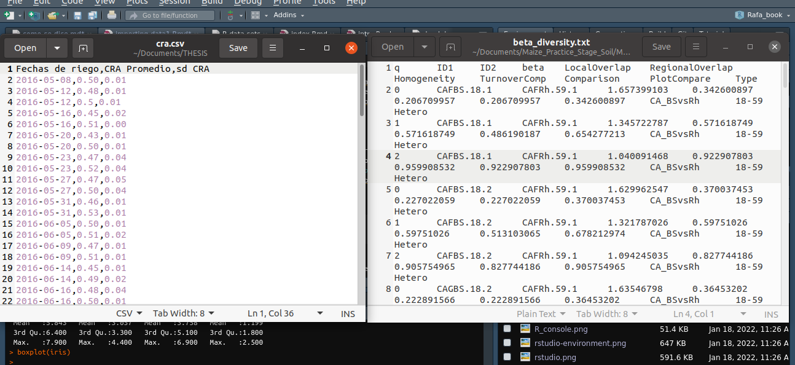
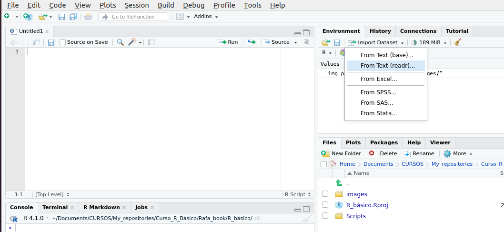
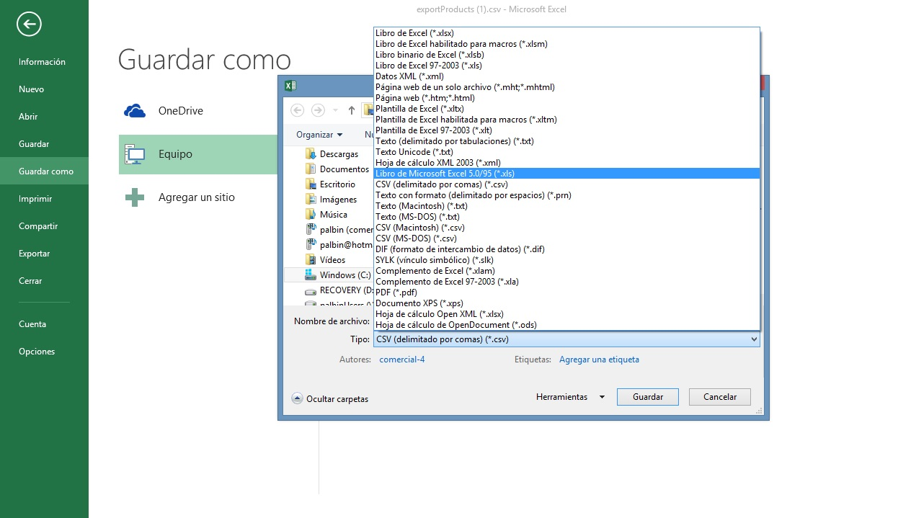

Capítulo 1 Introducción a R y Rstudio
Instalación de Rsudio y R
- R versión de 4.0 en adelante.
- Rstudio versiones 2024 en adelante.
En caso de no tener instalado R y Rstudio que son los prerrequisitos para realizar cada uno de los ejercicios, entonces debe visitar los siguientes links para descargar e instalarlos. Es recomendable instalar la última versión para que disponga de los paquetes y funciones más actualizados y, le permitan a su vez, un mejor uso del software.
1.1 Comenzando con R y RStudio
1.1.1 Breve descripción de R
R es un lenguaje de programación como C, Java o Python, pero enfocado principalmente a la estadística. Cuando instalamos R en nuestra computadora, en realidad estamos instalando un entorno de programación, pero es necesario escribir correctamente las instrucciones para que puedan ser interpretarlas y ejecutarlas adecuadamente. Como en otros lenguajes de programación, en R podemos guardar nuestros proyectos de trabajo mediante un script, que puede ser utilizado eventualmente y compartido con otros usuarios de R.
1.1.2 Un poco de historia…1
R tiene su origen en el lenguaje de programación S, desarrollado en los Laboratorios Bell de Estados Unidos. Posteriormente, en 1993, Ross Ihaka y Robert Gentleman, de la Universidad de Auckland en Nueva Zelanda, crearon una versión de S de código abierto y gratuita, lo que permitió su acceso y uso generalizado. No obstante, fue en el año 2000 cuando se lanzó una versión estable de R. Actualmente, el desarrollo y mantenimiento del software están a cargo del R Development Core Team, un grupo internacional de expertos en ciencias computacionales y estadísticas, provenientes de diversas instituciones académicas.
1.1.3 ¿Por qué usar R?2
R es gratuito y de código abierto3.
Se ejecuta en todas las plataformas principales: Windows, Mac Os, UNIX/Linux.
Los scripts y los objetos de datos se pueden compartir entre plataformas y usuarios.
Existe una comunidad creciente y activa de usuarios en R y, como resultado, hay numerosos recursos para aprender4 5.
Es fácil para otras personas contribuir con complementos (add-ons en inglés) o paquetes que les permiten a los desarrolladores compartir implementaciones de software relacionados a nuevas metodologías de ciencia de datos. Esto les aporta a los usuarios de R acceso directo a los métodos y herramientas más recientes que se desarrollan para una amplia variedad de disciplinas, incluyendo la ecología, la biología molecular, las ciencias sociales y la geografía, entre otros campos.
Es fácil para otras personas contribuir con complementos (add-ons en inglés) o paquetes que les permiten a los desarrolladores compartir implementaciones de software relacionados a nuevas metodologías. Esto aporta acceso directo a los métodos y herramientas más recientes para una amplia variedad de disciplinas, incluyendo la ecología, la biología molecular, las ciencias sociales, la geografía, entre otros campos.
1.1.4 RStudio
RStudio será nuestra plataforma de uso directo, ya que nos provee un editor visual e interactivo para crear y editar scripts. Además, de otras herramientas útiles que iremos evaluando a lo largo de los diferentes temas.
1.1.5 Interfaz de Rstudio
Rstudio posee 4 paneles principales (Figura 1.1):
En el panel superior izquierdo aparece el editor de códigos, que comprende la sección donde se crean los scripts que deben ser ejecutados.
En el panel inferior izquierdo se encuentra la consola. Aquí es donde R evalúa y corre los códigos. Al comienzo de la consola encontrará el carácter >. Este es un mensaje indicando que R está listo para recibir un código nuevo.
A la derecha, el panel superior incluye pestañas como Environment e History. La pestaña Environment (ambiente) muestra el nombre de todos los objetos (como vectores, matrices, bases de datos, etc.) creados en la consola. Por otra parte, la pestaña History le muestra un historial de todo el código que ha desarrollado previamente en la consola.
En el panel inferior derecho se muestran cinco pestañas: File, Plots, Packages, Help y viewer. A grandes rasgos, File le brinda acceso al directorio de archivos en su computadora y en Plots se visualizan todos los gráficos creados. Además, Packages muestra una lista de todos los paquetes instaladas en R, mientras que Help es es el menú de ayuda para las diferentes funciones en R.
Figure 1.1: Se representan los cuatro paneles de Rstudio
1.1.6 Scripts
Una de las principales ventajas de R es la posibilidad de guardar los códigos y comandos mediante scripts. Un script es un archivo de texto que contiene una serie de instrucciones y comentarios. Para crear un nuevo script, solo tiene que hacer clic en “File”, luego seleccionar “New File” y elegir “R Script”. Esto abrirá un nuevo panel en la pantalla, donde podrá comenzar a escribir sus códigos y comentarios (Figura 1.2).

Figure 1.2: Representación gráfica de como abrir un nuevo script (File > New file > R script).

Figure 1.3: Representación gráfica de como abrir un nuevo script (File > New file > R script).
Podemos abrir y ejecutar scripts en R usando la función source(), indicando la ruta del archivo .R en nuestra computadora, o dar click en File > Open File y luego buscar la carpeta donde se encuentre el script. Por ejemplo.
1.1.6.1 Cómo ejecutar comandos mientras se editan scripts
Para comenzar, abrimos un nuevo script y le asignamos un nombre. Esto se puede hacer guardando el script sin nombre a través del editor (Figura 1.3). Al guardar el script por primera vez, es importante usar un nombre descriptivo, en minúsculas, sin espacios y preferiblemente con guiones bajos (“_“) para separar las palabras. Se deben evitar los guiones (”-“). Un ejemplo de nombre adecuado para el script podría ser: “mi_script.R”.

Figure 1.4: Con el editor de scripts como ventana activa, guarde y asigne un nombre a su archivo, junto con la extensión de archivo “. R”.
Ahora podemos editar nuestro primer script. Las primeras líneas de código se utilizan para agregar títulos o comentarios, los cuales se indican con el símbolo “#” al inicio de cada línea. A continuación, cargamos los paquetes y los datos que vamos a utilizar en el análisis. En una sección posterior, profundizaremos más sobre cómo cargar datos y paquetes de manera adecuada. Como ejemplo, utilizaremos la base de datos “Iris”. Primero, cargamos la librería “datasets” y posteriormente los datos. Luego, obtendremos un resumen de los datos y, finalmente, creamos un gráfico boxplot. Para ejecutar cada línea de código, debemos hacer clic en el botón “Run” en la parte superior derecha del panel de edición. También se puede ejecutar una línea de código usando las combinaciones de teclas: Control+Enter en Windows y Linux, o Command+Return en Mac.
Ejecute las siguientes líneas de código y obtenga los resultados provistos en la Figura 1.4:

Figure 1.5: Resumen (panel inferior izquierdo) y gráfico boxplot (panel inferior derecho) de la base de datos “Iris”.
1.1.7 Directorio de trabajo
El directorio de trabajo es la carpeta donde se encuentran los archivos (base de datos) que posteriormente son importados a R. Para saber cuál es la ubicación del directorio de trabajo use la siguiente función “getwd”. Para cambiar el directorio de trabajo, debe usar la función “setwd” y establecer la respectiva ruta (e.g. “/home/Desktop/”). Además, se puede conocer el contenido del directorio, utilizando las siguientes funciones “list.files” y “list.dirs”.
1.1.8 Sesión
En R, los objetos y funciones se almacenan en la memoria durante una sesión y no se comparten entre sesiones. Cada vez que inicia R, se crea una nueva sesión. Debe guardar los objetos generados durante la sesión, ya que los scripts se guardan automáticamente, pero no los objetos. Estos se guardan en un archivo **.RData+ en su directorio de trabajo. Para ver todos los objetos guardados, utilice la función “ls”*. En la Figura 1.5 se muestra cómo crear un nuevo proyecto en R.
Figure 1.6: Creación de un nuevo proyecto en R.

Figure 1.7: Nombrando el nuevo proyecto y escogiendo dónde se guardará.
1.1.9 Proyecto
Un proyecto de R (con extensión .Rproj) es una carpeta que contiene todos los archivos y recursos relacionados. Dentro del proyecto, los scripts, archivos de datos, resultados e historial se organizan en subcarpetas, lo que facilita la gestión del trabajo. Al crear un proyecto, todos los archivos quedan vinculados, lo que mejora la organización y el flujo de trabajo. Para crear un proyecto debe realizar los siguientes pasos (File>New File> New directory>New Project> Colocar el nombre del directorio y dónde se guardará>Create Project; ver Figura 1.6)

Figure 1.8: Figura 6.
1.1.10 Instalación de paquetes de R
Una de las principales ventajas de R es que numerosos desarrolladores y programadores crean paquetes continuamente, los cuales están disponibles de forma gratuita y ofrecen diversas funcionalidades. Actualmente, existen muchos paquetes accesibles a través de CRAN (Comprehensive R Archive Network), una red global de servidores que proporcionan versiones actualizadas. Además, se pueden encontrar numerosos paquetes en plataformas como GitHub y Bioconductor. Un ejemplo de ello es el paquete tidyverse que exploraremos en sesiones posteriores. Para instalarlo, utilice el siguiente código:
En RStudio, se puede ir a la pestaña “Packages” y hacer clic en “Install”. Luego, debe escribir el nombre del paquete que desea instalar, siempre y cuando esté disponible en CRAN. Posteriormente, cargue la librería utilizando la función library():
Una vez instalados los paquetes, no deben instalarse nuevamente. Sin embargo, cada vez que cerramos o reiniciamos sesión es necesario volver a cargarlos. Además, debemos tener en cuenta que la instalación de tidyverse incluye varios paquetes. Esto ocurre cuando un paquete tiene dependencias. Algunos paquetes no están en CRAN y se requiere de otros para su instalación. Por ejemplo, para instalar la versión en desarrollo de rmarkdown, se debe utilizar el paquete devtools. Los dos puntos “::” permiten llamar una función específica de un paquete sin cargarlo completamente.
1.1.11 Tipos de objetos en R
La información que manipulamos en R se estructura en forma de objetos y los podemos ver almacenados en el panel del ambiente de trabajo o Enviroment. Una ventaja de los lenguajes de programación es la posibilidad de definir variables y escribir expresiones matemáticas para almacenar valores que se usarán eventualmente. En R, usamos <- para asignar valores a las variables. Aunque también se puede usar =, se recomienda evitarlo ya que el signo = se utiliza para igualdad lógica, lo que podría generar confusión.
Los objetos pueden ser de diferentes tipos:
Números escalares o letras
Vectores y matrices
Dataframes, tablas y listas
En las siguientes líneas de comando se puede observar diferentes tipos de objetos:
a <- 1 #escalar
letra <- "a" #caracter o letra
b <- c(1,2,3) #vector
c<- matrix(1:10) #matriz
d<- data.frame(Especie=c("A", "B"), Longitud=c(c(1,2))) #dataframe o tabla
e<- list(c(1:20), c(1:10)) #listaPara visualizar la información almacenada en un objeto, simplemente le pedimos a R que evalúe esa información mediante la función print o escribiendo directamente el objeto creado. Por Ejemplo:
## [1] 1Otra forma de examinar los objetos es buscarlos directamente en el ambiente de trabajo. Si intentamos visualizar el valor de un objeto que no está definido en el ambiente de trabajo se recibirá un mensaje de error. Por ejemplo, si escriben la letra f, encontrarán el siguiente error: object “f” not found.
1.1.11.1 Algunos tips para asignar variables u objetos en R…
Los nombres de variables tienen que comenzar con una letra, no pueden contener espacios y no deben ser variables predefinidas en R (como funciones o argumentos de funciones). Por ejemplo, nombrar un objeto de la siguiente manera “install.packages <- 2” provocará confusiones para R, ya que lo reconocerá como una función.
Los nombres deben ser descriptivos para que reflejen el contenido almacenado. Es recomendable usar minúsculas y separar las palabras con guiones bajos (_) en lugar de espacios. Además, se deben evitar caracteres especiales como guiones (-), puntos (.), punto y coma (;), arroba (@) o signos de interrogación (?).
1.1.11.2 Guardar los espacios de trabajo y exportar objetos de R
Los objetos evaluados permanecen en el espacio de trabajo hasta finalizar sesión. Sin embargo, puede guardar el espacio de trabajo para usarlo posteriormente. Al finalizar sesión, el programa muestra una ventana emergente sugiriendo si desea guardar el script. Además, al reiniciar R, se restaurará con los objetos previamente guardados. Por otra parte, es recomendable crear un proyecto de trabajo (como vimos previamente) para guardar todos los archivos y scripts que estén relacionados con el mismo.
Usando como ejemplo el “data.frame” creado en el ejemplo anterior “d”. R posee funciones para la exportación de datos en formato de textos editables, como son:
library(readr)
write_tsv(d, "database.tsv")
write.table(d, "datase.txt", sep = "\t")
write_csv(da, "database.csv")También existe la forma de guardar objetos sin declararlos texto, sino como la identidad de R. Por ejemplo:
Y para abrir o cargar este tipo de objetos con extensión .RDS usamos la siguiente función:
1.1.12 Funciones en R3
Una vez definidos los objetos o variables, se usan funciones específicas para continuar con el análisis de datos. R incluye funciones preestablecidas y otras que se encuentran en determinados paquetes. En apartados previos utilizamos funciones como write_csv() para exportar datos o library() para cargar paquetes. También existen funciones como log() o sqrt() para calcular logaritmos o raíces cuadradas. (Nótese que la mayoría de las funciones están definidas en inglés).
La sintaxis de R indica que se deben usar paréntesis para evaluar funciones. Por ejemplo, con la función log(), debemos asignar un valor a su argumento para obtener un resultado (e.g. “log(a)”. Sin embargo, algunas funciones como ls() no requieren argumentos y devuelven información sin necesidad de incluir información dentro de los paréntesis.
## [1] 0En R, podemos explorar funciones desde la pestaña “Paquetes”. Al hacer clic en un paquete, se despliegan las funciones que contiene junto con su documentación. Para conocer los argumentos de una función, podemos usar el comando help o preceder la función con un signo de interrogación (?). También es posible consultar manuales y obtener ayuda detallada sobre las funciones.:
La página de ayuda de cada función muestra qué argumentos requiere. Por ejemplo, la función log() necesita los argumentos x y base. Algunos argumentos son obligatorios y otros opcionales, los cuales se indican en la documentación con valores predeterminados asignados con el signo =. El valor predeterminado de base en la función log() es exp(1), lo que hace que el logaritmo calculado sea el logaritmo natural:
## function (x, base = exp(1))
## NULL## [1] 3Podemos escribir de manera más breve si omitimos el nombre de los argumentos.:
## [1] 3Existen algunas funciones que no necesitan paréntesis para ser evaluadas. Entre estas destacan los operadores aritméticos y relacionales:
## [1] 2## [1] -1## [1] 3.141593## [1] 0.6666667## [1] 4También podemos crear funciones personalizadas en R. Por ejemplo, si queremos definir nuestra propia versión de la función mean(), que calcula el promedio, podríamos hacerlo de la siguiente manera:
## [1] 50.5## [1] 50.5Note que ambas devuelven el mismo resultado. Lo importante es que hemos creado una nueva función, definiendo primero las variables (o variables) y luego las operaciones asignadas a un objeto R.
1.2 Tipos de datos
Como se ejemplificó previamente, los objetos en R pueden ser de diversos tipos, como números o caracteres. Para identificarlos, podemos usar la función class(), que nos permite determinar su clase o tipo de datos:
## [1] "numeric"| Tipo | Nombre en inglés/en R | Ejemplo |
|---|---|---|
| Numérico | numeric | 5.1 |
| Entero | integer | 4 |
| Real | double/float | 3.4 |
| Cadena de texto, letra | character | “a” |
| Factor | factor | Bajo |
| Lógico | logic | TRUE, FALSE |
| Perdido/Omitido | NA | NA |
| Vacío | null | NULL |
1.2.0.1 Para tener en cuenta
Un valor de tipo “character”es una cadena de caracteres, que puede incluir letras, números y símbolos. Se pueden convertir los objetos en valores de caracteres mediante la función as.character().
Un factor es un tipo de dato exclusivo de R, que representa valores categóricos usando etiquetas en lugar de números. Cada etiqueta o valor que puede tomar un factor se llama “nivel”. Los niveles no siguen necesariamente el orden en que aparecen en los datos, y por defecto, R los ordena alfabéticamente.
En los conjuntos de datos estadísticos, a menudo encontramos datos faltantes, que en R son representados como valores NA. En cambio, NULL indica que el valor en cuestión simplemente no existe.
1.2.0.2 Coerción de datos
En R, los datos pueden ser coercionados, es decir, forzados, para transformarlos de un tipo a otro.
| Función de coerción | Tipo |
|---|---|
| as.integer() | Entero |
| as.numeric() | Numérico |
| as.character() | Caracter |
| as.factor() | Factor |
| as.logical() | Lógico |
Veamos algunos ejemplos:
## [1] "5"## [1] medio
## Levels: medio1.2.1 Tipos de estructura de los datos
Los datos se estructuran de diferentes formas dependiendo de su propósito, en todo caso, la función class() también nos puede dar información sobre los tipos de estructuras de datos.
1.2.1.1 Vectores
Los vectores son colecciones de uno o más datos del mismo tipo. Por ejemplo, si tenemos un vector con datos numéricos tenemos un vector de tipo numérico. No es posible mezclar datos de tipos diferentes dentro de ellos. Por ejemplo, un vector de colores puede ser:
## [1] TRUE## [1] "character"Al usar las funcion is.vector() corroboramos que efectivamente es un vector al darnos TRUE pero al pedirle que nos indique el tipo con la función class nos dice que es un “character” es decir que es un vector de una cadena de texto.
Existen algunas operaciones al aplicarlas a un vector, se aplican a cada uno de sus elementos. A este proceso le llamamos vectorización. Las operaciones aritméticas y relacionales pueden vectorizarse. Si las aplicamos a un vector, la operación se realizará para cada uno de los elementos que contiene.
## [1] 10 20 30 40 50 60 70 80 90 100## [1] 2 3 4 5 6 7 8 9 10 11## [1] 2 4 6 8 10 12 14 16 18 201.2.1.2 Matrices y arreglos
Las matrices y arreglos no son más que vectores multidimensionales, es decir un conjunto de vectores. Al igual que un vector deben contener un sólo tipo de datos. En sentido estricto, una arreglo es una matrix pero con n dimensiones, mientras que las matrices tienen solo dos dimensiones. Las matrices y los arreglos suelen ser usados de manera regular en matemáticas y estadística, por ser sencillas y contener solo un tipo de datos (usualmente de tipo numérico). En general, es preferible usar listas en lugar de arrays, una estructura de datos que además tienen ciertas ventajas que se revisará más adelante. En R, podemos usar el símbolo : para indicar una secuencia de números que tiene un principio y fin, por ejemplo:
Este es un vector con números que va desde el 1 al 20. Pero para hacerlo matriz hacemos:
O para dividirlo en varias renglones y columnas:
## [1] 5 4## [,1] [,2] [,3] [,4]
## [1,] 1 6 11 16
## [2,] 2 7 12 17
## [3,] 3 8 13 18
## [4,] 4 9 14 19
## [5,] 5 10 15 20Con la función dim() podemos saber cuales son las dimensiones (es decir, largo y ancho) de nuestra matriz. Las operaciones aritméticas también son vectorizadas al aplicarlas a una matriz. La operación es aplicada a cada uno de los elementos de la matriz al igual que los vectores.
## [,1] [,2] [,3] [,4]
## [1,] 2 12 22 32
## [2,] 4 14 24 34
## [3,] 6 16 26 36
## [4,] 8 18 28 38
## [5,] 10 20 30 40Algo más que podemos hacer es tranponer una matriz para rotarla 90°.
## [,1] [,2] [,3] [,4] [,5]
## [1,] 1 2 3 4 5
## [2,] 6 7 8 9 10
## [3,] 11 12 13 14 15
## [4,] 16 17 18 19 201.2.1.3 Listas
Las listas, al igual que los vectores, son estructuras de datos unidimensionales, sólo tienen largo, pero a diferencia de los vectores cada uno de sus elementos puede ser de diferente tipo o incluso de diferente clase, por lo que son estructuras heterogéneas. Podemos tener listas que contengan escalares, vectores, matrices, data frames u otras listas. Para crear una lista usamos la función list(), que nos pedirá los elementos que deseamos incluir en nuestra lista. Para esta estructura, no importan las dimensiones o largo de los elementos que queramos incluir en ella. Al igual que con un data frame, tenemos la opción de poner nombre a cada elemento de una lista.
## Warning in matrix(1:4, nrow = 5): la longitud de los datos [4] no es un submúltiplo o múltiplo del
## número de filas [5] en la matrizuna_df <- data.frame("numeros" = 1:3, "letras" = c("a", "b", "c"))
una_lista <- list("vector" = un_vector, "matriz" = una_matriz, "df" = una_df)
una_lista## $vector
## [1] 1 2 3 4 5 6 7 8 9 10 11 12 13 14 15 16 17 18 19 20
##
## $matriz
## [,1]
## [1,] 1
## [2,] 2
## [3,] 3
## [4,] 4
## [5,] 1
##
## $df
## numeros letras
## 1 1 a
## 2 2 b
## 3 3 cNo es posible vectorizar operaciones aritméticas usando listas. Al intentarlo nos es devuelto un error.
Finalmente, en caso de que sea necesario utilizar funciones que requieran a fuerza una matrix o un data frame también aplica la coerción entre estas dos estructuras de datos:
coerción_df<- as.data.frame(una_matriz)
coerción_mat<- as.matrix(una_df)
class(coerción_df); class(coerción_mat)## [1] "data.frame"## [1] "matrix" "array"Esta coerción es muy útil por ejemplo al utilizar la función t() que transponer una data frame:
## [1] "matrix" "array"Como vemos la función t() cambia la estructura de los datos, para evitar esto, coercionamos esta salida.
## [1] "data.frame"1.3 Data frames
La forma más común de almacenar un set de datos en R es usando un data frame. Los data frames son estructuras de datos de dos dimensiones (rectangulares) que pueden contener datos de diferentes tipos, por lo tanto, son heterogéneas. Podemos entender a los data frames como una versión más flexible de una matriz. Mientras que en una matriz todas las celdas deben contener datos del mismo tipo, los renglones de un data frame admiten datos de distintos tipos, pero sus columnas conservan la restricción de contener datos de un sólo tipo.
Vamos a trabajar con una data de ejemplo y exploraremos esta data frame, es una data en la que evaluan el efecto de la dosis de vitamina C sobre el crecimiento de los dientes de unos tipos de cerdos. La función str es útil para obtener más información sobre la estructura de un objeto:
## 'data.frame': 60 obs. of 3 variables:
## $ len : num 4.2 11.5 7.3 5.8 6.4 10 11.2 11.2 5.2 7 ...
## $ supp: Factor w/ 2 levels "OJ","VC": 2 2 2 2 2 2 2 2 2 2 ...
## $ dose: num 0.5 0.5 0.5 0.5 0.5 0.5 0.5 0.5 0.5 0.5 ...Esto nos dice mucho más sobre el objeto. Vemos que la tabla tiene 60 filas y 3 variables.
Podemos mostrar las primeras seis líneas usando la función head:
## len supp dose
## 1 4.2 VC 0.5
## 2 11.5 VC 0.5
## 3 7.3 VC 0.5
## 4 5.8 VC 0.5
## 5 6.4 VC 0.5
## 6 10.0 VC 0.5Para crear un data frame usamos la función data.frame(). Esta función nos pedirá un número de vectores igual al número de columnas que deseemos. Todos los vectores que proporcionemos deben tener el mismo largo. Es decir, un data frame está compuesto por vectores. Veamos un ejemplo:
df <- data.frame(
"entero" = 1:3,
"factor" = c("alto", "medio", "bajo"),
"letras" = as.character(c("a", "b", "c"))
)
df## entero factor letras
## 1 1 alto a
## 2 2 medio b
## 3 3 bajo c## [1] 3 3La función dim nos permite conocer también las dimensiones de nuestra data frame.
En este caso tenemos 3 filas y 3 columnas.Las funciones names y colnames nos permiten conocer los nombres de los headers o de las columnas.
## [1] "entero" "factor" "letras"## [1] "entero" "factor" "letras"1.3.1 El operador $ y otras formas de acceso
Para tener acceso a las diversas variables o columnas de un data.frame utilizamos el operador de acceso $, por ejemplo, si quisieramos tener acceso a la variable ‘factor’ de la data.frame df de la siguiente manera:
## [1] "alto" "medio" "bajo"## [1] "character"## [1] TRUECuando usamos el operador $ el tipo de objeto que obtenemos es un vector, en el ejemplo como la columna ‘factor’ es una cadena de caracteres entonces al usar las funciones class() y is.vector() nos confirma lo antes mencionado.
Tip: R viene con una muy buena funcionalidad de autocompletar que nos ahorra la molestia de escribir todos los nombres. Escriban df$f y luego presionen la tecla tab en su teclado.
Esta funcionalidad y muchas otras características útiles de autocompletar están disponibles en RStudio, esto aplica también para las funciones.
En el caso de las listas también podemos acceder con el operador $, aunque también podemos usar corchetes dobles ([[) así.
Por ejemplo declaramos una lista:
notas_estudiantes <- list(nombres = c("Ana", "Clara", "Sofy"),
id_estudiante = c("i1", "i2", "i3"),
notas = c(10, 9,7))Y queremos extraer los nombres de los estudiantes, entonces hacemos_
## [1] "Ana" "Clara" "Sofy"## [1] "Ana" "Clara" "Sofy"Y obtenemos el mismo resultado.
Para el caso de las matrices se puede acceder usando corchetes ([).
Si desean la primera fila y la pimera columna, entonces:
## [1] 1## [,1] [,2]
## [1,] 1 6
## [2,] 2 7
## [3,] 3 8
## [4,] 4 9
## [5,] 5 10Para acceder solo a la primera fila y solo a la primera columa usamos las comas, así: s
## [1] 1 6## [1] 1 2 3 4 5## [1] TRUENotese que esto devuelve un vector, no una matriz.
Del mismo modo, si desean la segunda columna completa, dejen el lugar de la fila vacío:
## [1] 6 7 8 9 10Esto también es un vector, no una matriz. Lo corroboramos con la función is.vector()
Se pueden crear subconjuntos basados tanto en las filas como en las columnas:
## [,1] [,2]
## [1,] 2 7
## [2,] 3 8
## [3,] 4 9Podemos convertir las matrices en data frames usando la función as.data.frame:
## V1 V2
## 1 1 6
## 2 2 7
## 3 3 8
## 4 4 9
## 5 5 101.4 Creando subconjuntos o Indexación.
En R, podemos obtener subconjuntos de nuestras estructuras de datos. Es decir, podemos extraer partes de una estructura de datos (nuestro conjunto).
También podemos usar corchetes individuales ([) para acceder a las filas y las columnas de un data frame y es exactamente igual que lo que se aplicó con las matrices.
A esto es lo que llamamos Subconjuntos de los data.frame.
Como las listas de datos que usamos para notas_estudiantes tienen las mismas dimensiones entonces podemos coercionarlo a ser una data.frame:
Y para obtener más de una entrada se puede utilizar un vector de entradas múltiples como índice:
## nombres id_estudiante
## 1 Ana i1
## 2 Clara i2
## 3 Sofy i3Obtenemos las dos primeras columnas. Las secuencias definidas anteriormente son particularmente útiles si necesitamos acceso, digamos, a los dos primeros elementos:
## nombres id_estudiante
## 1 Ana i1
## 2 Clara i2
## 3 Sofy i3Ahora bien, si queremos NO elegir por ejemplo la primera columna o dejarla por fuera, entonces usamos el signo ‘-’:
## id_estudiante notas
## 1 i1 10
## 2 i2 9
## 3 i3 7Si los elementos tienen nombres de columna o headers también podemos acceder a las entradas utilizando estos nombres:
## nombres notas
## 1 Ana 10
## 2 Clara 9
## 3 Sofy 7Ahora bien, podemos seleccionar datos que tengan características específicas, por ejemplo, todos los valores mayores a cierto número o aquellos que coinciden exactamente con un valor de nuestro interés. Para realizar esta operación haremos uso de índices y operadores lógicos.
| Operador | Comparación |
|---|---|
| < | Menor que |
| <= | Menor o igual que |
| > | Mayor que |
| >= | Mayor o igual que |
| == | Exactamente igual que |
| ! = | No es igual que |
| ! | No es |
| = | Igual que |
| &, | | y, ó |
Por ejemplo en el caso de la tabla de evaluaciones, si queremos escoger los valores que sean mayor de 8 en las notas obtenidas:
## [1] TRUE TRUE FALSEObservamos cuales cumplen con la condición si muestran TRUE.
Ahora para usar este filtro y hacer un subconjunto con el data.frame, hacemos:
## nombres id_estudiante notas
## 1 Ana i1 10
## 2 Clara i2 9Si queremos usar más de una condición pero indicando negación:
## nombres id_estudiante notas
## 1 Ana i1 10
## 3 Sofy i3 7Para escoger un valor que sea exactamente igual a una condición usamos ‘==’:
## nombres id_estudiante notas
## 3 Sofy i3 71.4.1 Importando datos
Para el ejemplo que vimos en el capítulo pasado usamos un dataset que está en el ambiente de R por default, si queremo saber cuales son los datasets que tenemos en nuestro ambiente, podemos usar el comando data() y nos desplegará la lista:
Si queremos utilizar los datos de nuestro trabajo o usar datos de una base de datos o que de una ‘dataset’ que se encuentre en internet, debemos Importar estos datos a nuestra sesión de R. Usualmente tenemos nuestros datos guardados en hojas de cálculo en diferentes formatos con diferentes extensiones, estos son los más populares:
separados con coma o punto y coma (
,,;): csv,separados con tabulaciones o espacios (tab,
\t) : .txt o .tsv,Hojas de cálculo de excel: .xls, son las más usadas.
A continuación muestro una imagen de como se ven un .csv y .txt:

1.5 El directorio de trabajo y rutas
Antes de importar nuestros propios archivos, tablas o datos debemos estar seguros en qué directorio nos encontramos, para estar seguros que vamos a importar el archivo deseado a R.
Existen tres opciones para esto:
Utilizar getwd() y setwd(), como lo vimos anteriormente, para establecer y saber en qué directorio nos encontramos y si es el caso, cambiarlo.
Poner la ruta completa de nuestro archivo, sin importar donde esté.
Utilizar “Import Dataset” de nuestro panel de ambiente y ubicar manualmente la ubicación del archivo.
El reto de la primera opción es permitir que las funciones de importación de R sepan dónde buscar el archivo que contiene los datos. La forma más sencilla de hacer esto es tener una copia del archivo en la carpeta donde las funciones de importación buscan por defecto, es decir guardar este archivo en nuestro directorio de trabajo.
1.5.1 Descargando un archivo de la web
Para descargar algún archivo en la web a utilizar, podemos correr el siguiente código:
download.file(
url = "https://raw.githubusercontent.com/sagar3122/Machine-Learning/refs/heads/master/iris.data.txt",
destfile = "iris.data")Si observamos nuestros archivos en nuestro directorio de trabajo con el código list.files() veremos que se encuentra esta data que hemos descargado.
El código anterior no lee los datos sólo, en este caso, descarga la data. Otra forma de descargarlo y a la vez abrirlo es de la siguiente manera, con el paquete readr:
1.6 Funciones de importación
Una vez descargado o que se encuentre en nuestro directorio de trabajo, podemos importar los datos con solo una línea de código.
Aquí usamos la función read.csv o read.delim de R base (que viene default cuando descargamos R).
iris_data<- read.csv("iris.data", header = F)
iris_data<- read.delim("iris.data",header = F, sep = ",")Los datos se importan y almacenan en el obejto iris_dat.
Los argumentos header = F y sep=“,” son parámetros extras que podemos agregar a la función para indicarle algunas cosas.
Por ejemplo header=F, le estamos diciendo que la prima fila no contiene los títulos o headers de la tabla, en caso de que si fuera así, le daríamos TRUE.
Podemos usar la tecla ‘tab’ para explorar las demás opciones que podemos utilizar en estas funciones.
También el paquete readr tiene otras funciones de importación muy parecidas:
library(readr)
iris_data<-read_csv("iris.data", col_names = c("Longitud.sepalo", "Ancho.Sepalo" ,
"Longitud.Petalo" ,"Ancho.Petalo" , "Especies" ))En esta función usamos el argumento col_names para establecer los Headers o nombre de las columnas de esta tabla.
La segunda opción que vimos es utilizar la ruta completa del archivo, por ejemplo:
## Rows: 344 Columns: 7
## ── Column specification ─────────────────────────────────────────────────────────────────────────────
## Delimiter: ","
## chr (3): species, island, sex
## dbl (4): culmen_length_mm, culmen_depth_mm, flipper_length_mm, body_mass_g
##
## ℹ Use `spec()` to retrieve the full column specification for this data.
## ℹ Specify the column types or set `show_col_types = FALSE` to quiet this message.
En este ejemplo, la data que importamos está ubicada en la carpeta de ‘Data’ de este proyecto. Y vemos que esta función de readr también nos da información del archivo como el tipo de variable y el nombre de las mismas.
La última opción, un poco más fácil para algunos y más interactiva es usar Import Dataset del planel del ambiente.

En esta opción podemos importar tablas con cualquiera de las funciones que despliega dependiendo del tipo de archivo, yo recomiendo si es .csv o .txt usar readr que es el mismo que usa tidyverse, como lo vimos anteriormente. Paquete que veremos más detalladamente junto con readxl en la siguiente sección.
1.6.1 Los paquetes readr y readxl4
1.6.1.1 readr
El paquete readr un paquete de tiyverse, tiene las siguientes funciones para importar arvhivos con diferentes extensiones:
| Función | Tipo de archivo | Extensión |
|---|---|---|
| read_table | valores separados por espacios en blanco | txt |
| read_csv | valores separados por comas | csv |
| read_csv2 | valores separados por punto y coma | csv |
| read_tsv | valores separados delimitados por tab | tsv o txt |
| read_delim | formato de archivo de texto general, debe definir delimitador | txt, csv o tsv |
1.6.2 Algunos tips para hojas de cálculo de excel…
- Evitar cosas como tener muchos diferentes formatos (colores, subrayados, etc).
- Evitar en lo posible celdas vacías y poner un dato en cada celda
- Evitar celdas con cálculo o aplicación de fórmulas.
- Tenga en cuenta que nuestros datos que tenemos en hojas de cálculo en excel también podemos guardarlos en otros formatos un poco más fáciles para ser importados como los que ya vimos (.csv y .txt). Esto utilizando la opción Guardar como y escogiendo el tipo de formato deseado. En la imagen podemos ver un ejemplo de esto:

1.7 Algunas funciones Básicas de R
1.7.1 sort y order
Digamos que queremos clasificar las notas de la mayor a la menor, podemos usar alguna de estas dos funciones:
## [1] 7 9 10## [1] 3 2 11.7.2 max y which.max
Si solo estamos interesados en la entrada con el mayor valor, podemos usar max:
## [1] 10y which.max nos dice que valor es el mayor, posicionalmente:
## [1] 1Para el mínimo, podemos usar min y which.min del mismo modo.
1.7.3 which
La función which nos dice qué entradas de un vector lógico son TRUE.
Entonces podemos escribir:
## [1] 1## nombres id_estudiante notas
## 1 Ana i1 10De esta forma también podemos usarlo para filtrar y hacer subconjuntos.
1.7.4 match
La función match nos dice qué índices de un segundo vector coinciden con cada una de las entradas de un primer vector:
v1<- c("Uvas", "Peras", "Mandarinas", "Plátanos", "Manzanas")
v2<- c("Uvas","Cerezas", "Mandarinas", "Naranjas", "Manzanas")
match(v1, v2)## [1] 1 NA 3 NA 5## [1] 2 4## [1] "Peras" "Plátanos"Este filtro puede aplicarse de igual manera a un data.frame:
## persona1 persona2
## 2 Peras Cerezas
## 4 Plátanos Naranjas## persona1 persona2
## 1 Uvas Uvas
## 3 Mandarinas Mandarinas
## 5 Manzanas Manzanas1.7.5 %in%
Si en lugar de un índice queremos un lógico que nos diga si cada elemento de un primer vector está en un segundo vector, podemos usar la función %in%.
Siguiendo el ejemplo pasado:
## [1] TRUE TRUENos dice que los dos elementos qu buscamos están presente en el data.frame()
Avanzado: match y %in% pueden dar el mismo output usando which:
## [1] 2 4## [1] 2 41.7.6 La familia de funciones apply
Esta familia de funciones es usada para aplicar una función a cada elemento de una estructura de datos. En particular, es usada para aplicar funciones en matrices, data frames, arreglos y listas. Para entender más fácilmente el uso de la familia apply, recordemos la vectorización de operaciones. Hay operaciones que, si las aplicamos a un vector, son aplicadas a todos sus elementos. La familia apply esta formada por las siguientes funciones:
apply()
lapply()
mapply()
sapply()
eapply()
rapply()
tapply()
vapply()
Es una familia numerosa y esta variedad de funciones se debe a que varias de ellas tienen aplicaciones sumamente específicas. Las más usadas son las que están en negrita, repasaremos la función apply pero no nos detendremos mucho porque muchas de estas no están al alcance del presente curso.
1.7.7 apply
apply aplica una función a todos los elementos de una matriz.
La estructura de esta función es la siguiente.
apply tiene tres argumentos:
X: Una matriz o un objeto que pueda coercionarse a una matriz, generalmente, un data frame.MARGIN: La dimensión (margen) que agrupará los elementos de la matrizX, para aplicarles una función. Son identificadas con números, 1 son renglones y 2 son colummnas.FUN: La función que aplicaremos a la matrizXen su dimenciónMARGIN.
Si queremos sumar todas las columnas de una matriz, podemos aplicar esta función, para comparar usaremos también la función ColSums() que realiza esta misma operación:
## [,1] [,2] [,3] [,4] [,5]
## [1,] 1 5 9 13 17
## [2,] 2 6 10 14 18
## [3,] 3 7 11 15 19
## [4,] 4 8 12 16 20## [1] 10 26 42 58 74## [1] 10 26 42 58 74También podemos aplicar múltiples funciones a una matriz:
multiples.func <- function(x) {
c(sum = sum(x), prom = mean(x), max = max(x))}
apply(X = matriz, MARGIN = 2, FUN = multiples.func)## [,1] [,2] [,3] [,4] [,5]
## sum 10.0 26.0 42.0 58.0 74.0
## prom 2.5 6.5 10.5 14.5 18.5
## max 4.0 8.0 12.0 16.0 20.01.7.8 Estructuras de control
Estas estructuras nos permiten controlar la manera en que se ejecuta nuestro código.Se establecen como condicionales en nuestros código. Por ejemplo, qué condiciones deben cumplirse para realizar una operación o qué debe ocurrir para ejecutar una función.
Las estructuras de control más usadas son:
| Estructura de control | Descripción |
|---|---|
| if, else | Si, de otro modo |
| while | mientras |
| for | Para |
| break | interrumpe |
| next | siguiente |
También las tocaremos pero no profundizaremos mucho en ellas, pero conoceremos como se utilizan.
1.7.8.1 If, else
If y else se utilizan para crear condiciones, por ejemplo, si cumple esta condición entonces haz esto, de otra manera, haz esto.
Ejemplo:
## [1] "Verdadero"## [1] "Falso"También hay una función que reune estas dos condiciones, esifelse() y se usa de igual manera:
## [1] "Verdadero"Podemos aplicarlo en los data.frames usando como ejemplo el dataset anterior:
## [1] "Aprobado" "Aprobado" "Reprobado"1.7.9 while
Este es un tipo de bucle que ocurre mientras una condición es verdadera (TRUE).
La operación se realiza hasta que se se llega a cumplir un criterio previamente establecido.
Ejemplo:
umbral <- 3
valor <- 0
while(valor < umbral) {
print("Aún no llegas al umbral")
valor <- valor + 1
}## [1] "Aún no llegas al umbral"
## [1] "Aún no llegas al umbral"
## [1] "Aún no llegas al umbral"Para revisar las demás estructuras, podemos revisar la referencia citada5
1.7.10 Tratando con datos NA
1.7.10.1 1. Probando qué tenemos NA en nuestros datos:
data <- data.frame(x1 = c(NA, 5, 6, 8, 9),
x2 = c(2, 4, NA, NA, 1),
x3 = c(3,6,7,0,3),
x4 = c("Hola", "algo",
NA, "Chao", NA))
is.na(data) ## x1 x2 x3 x4
## [1,] TRUE FALSE FALSE FALSE
## [2,] FALSE FALSE FALSE FALSE
## [3,] FALSE TRUE FALSE TRUE
## [4,] FALSE TRUE FALSE FALSE
## [5,] FALSE FALSE FALSE TRUE## [1] FALSE FALSE TRUE TRUE FALSE## [1] 1 8 9 18 20## [1] 51.7.10.2 2. Omitir NAs
## [1] 7## x1 x2 x3 x4
## 2 5 4 6 algo## x1 x2 x3 x4
## 2 5 4 6 algo## x1 x2 x3 x4
## 1 NA 2 3 Hola
## 2 5 4 6 algo
## 5 9 1 3 <NA>1.7.10.3 3. Reemplazar NA’s
#reemplazar con 0
data[is.na(data)] <- 0
#reemplazar con el promedio o mediana
data$x1[is.na(data$x1)] <- mean(data$x1, na.rm = TRUE)
data$x2[is.na(data$x2)] <- median(data$x2, na.rm = TRUE)Para ver soluciones más complejas podemos buscar los paquetes Hmisc (impute), mice (mice) y rpart (repart).
https://bookdown.org/ndphillips/YaRrr/arranging-plots-with-parmfrow-and-layout.html↩︎
https://cran.r-project.org/web/packages/cowplot/vignettes/introduction.html↩︎
https://bookdown.org/ndphillips/YaRrr/arranging-plots-with-parmfrow-and-layout.html↩︎
https://cran.r-project.org/web/packages/cowplot/vignettes/introduction.html↩︎